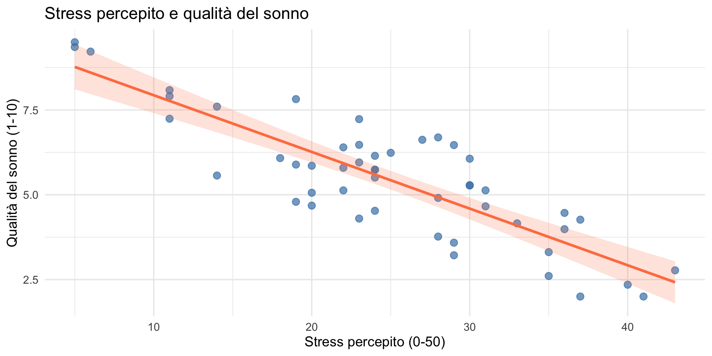
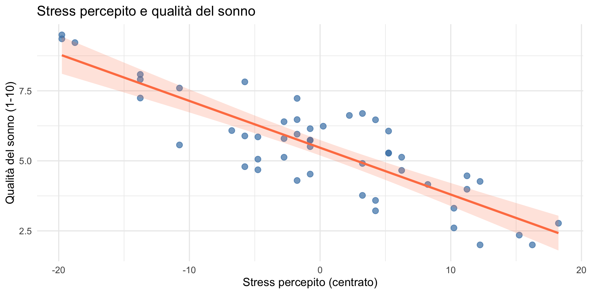
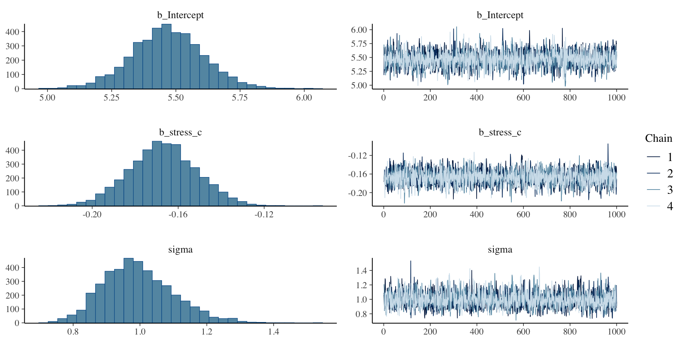
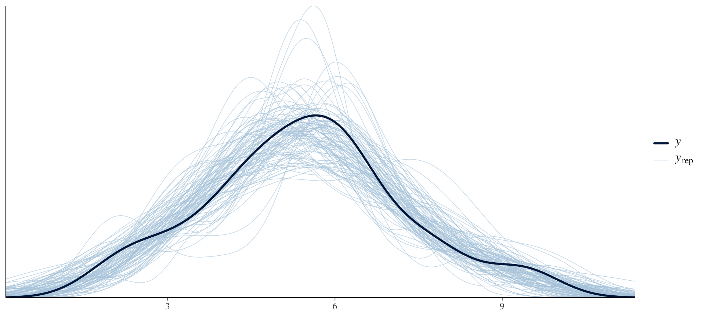
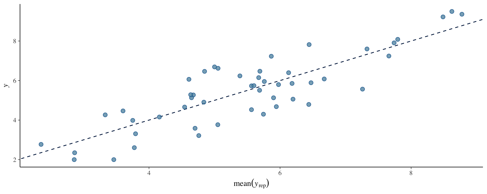
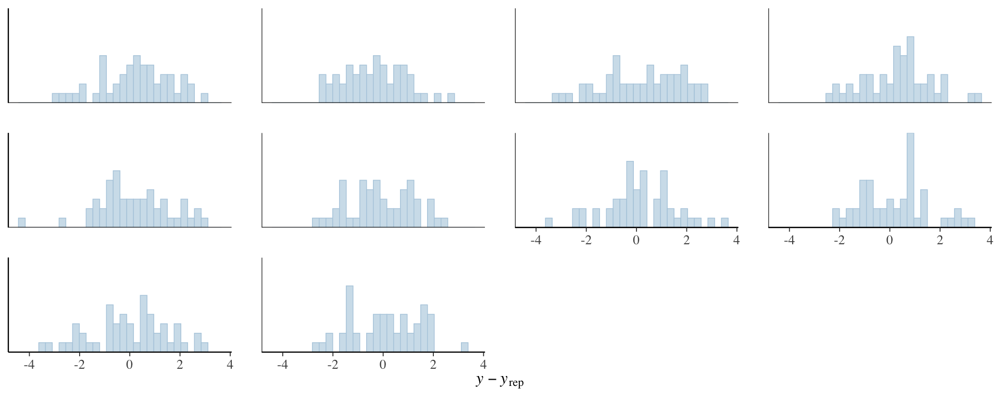
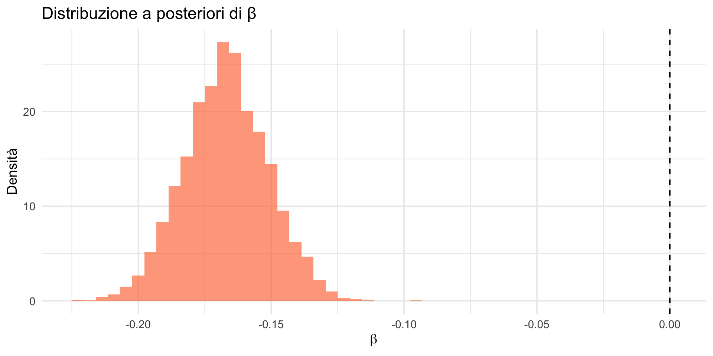

Il modello di regressione lineare bayesiano
Implementazione pratica con brms — Segmento 2
![]()
16 febbraio 2026
Obiettivi
- Stimare un modello di regressione bayesiano con brms.
- Interpretare l’output del modello.
- Eseguire la diagnostica delle catene MCMC.
- Effettuare il posterior predictive check.
- Rispondere a domande di ricerca con la posterior.
Parte 1: preparare i dati
Il nostro esempio
Continuiamo con l’esempio della relazione tra stress percepito e qualità del sonno introdotto nel segmento precedente.
Esploriamo i dati
stress sonno
Min. : 5.00 Min. :2.000
1st Qu.:20.00 1st Qu.:4.340
Median :24.00 Median :5.537
Mean :24.76 Mean :5.468
3rd Qu.:30.00 3rd Qu.:6.448
Max. :43.00 Max. :9.496 Visualizzazione

Centriamo il predittore
Come discusso nel segmento 1, centrare il predittore migliora l’interpretabilità dell’intercetta:

Parte 2: stimare il modello con brms
La sintassi di brms
brms usa una sintassi simile a lm():
Cosa fa brms?
Nella Lezione 23 abbiamo già usato brms per l’esempio BDI-II con un modello a sola intercetta (bdi ~ 1). Ora aggiungiamo un predittore.
brms automaticamente:
- Traduce la formula in codice Stan.
- Specifica prior di default (debolmente informative).
- Esegue il campionamento MCMC.
- Restituisce le distribuzioni a posteriori.
Vediamo i risultati
Family: gaussian
Links: mu = identity
Formula: sonno ~ stress_c
Data: dati (Number of observations: 50)
Draws: 4 chains, each with iter = 2000; warmup = 1000; thin = 1;
total post-warmup draws = 4000
Regression Coefficients:
Estimate Est.Error l-95% CI u-95% CI Rhat Bulk_ESS Tail_ESS
Intercept 5.47 0.14 5.18 5.75 1.00 3444 2621
stress_c -0.17 0.02 -0.20 -0.14 1.00 3433 2972
Further Distributional Parameters:
Estimate Est.Error l-95% CI u-95% CI Rhat Bulk_ESS Tail_ESS
sigma 0.99 0.10 0.81 1.22 1.00 3261 2620
Draws were sampled using sample(hmc). For each parameter, Bulk_ESS
and Tail_ESS are effective sample size measures, and Rhat is the potential
scale reduction factor on split chains (at convergence, Rhat = 1).Interpretazione dell’output
Intercept: qualità del sonno media quando lo stress è al livello medio del campione. Stima: 5.47, IC 95%: [5.18, 5.75].
stress_c: variazione della qualità del sonno per ogni punto in più di stress. Stima: -0.17, IC 95%: [-0.2, -0.14].
sigma: deviazione standard residua. Stima: 0.99.
Interpretiamo il coefficiente di regressione
Il coefficiente stress_c = -0.17 significa:
“Per ogni punto in più di stress percepito, la qualità del sonno diminuisce in media di 0.17 punti.”
L’intervallo di credibilità al 95% non include lo zero → evidenza forte di un’associazione negativa. Ricordate la Lezione 20: un intervallo di credibilità è interpretabile direttamente come probabilità sul parametro — a differenza dell’intervallo di confidenza frequentista.
Parte 3: diagnostica del modello
Verificare la convergenza
Prima di interpretare i risultati, dobbiamo verificare che le catene MCMC siano convergenti.
Indicatori chiave:
- R-hat ≈ 1.00 (< 1.01 è accettabile).
- ESS (Effective Sample Size) > 400.
- Trace plot senza trend.
R-hat ed ESS: diagnostica della convergenza
Utilizzando:
otteniamo le principali misure di diagnostica MCMC per ciascun parametro del modello.
R-hat (Gelman–Rubin statistic)
- R-hat ≈ 1.00 per tutti i parametri;
- indica che la variabilità tra le catene è simile a quella entro le catene;
- suggerisce che le catene hanno raggiunto la stessa distribuzione limite.
Conclusione: non vi sono evidenze di problemi di convergenza.
ESS (Effective Sample Size)
- ESS > 400 per tutti i parametri;
- l’ESS rappresenta il numero di campioni indipendenti equivalenti;
- tiene conto dell’autocorrelazione nelle catene MCMC.
Conclusione: la posterior è campionata con sufficiente precisione.
Messaggio chiave
Valori di R-hat prossimi a 1 e un ESS elevato indicano che l’algoritmo MCMC ha esplorato in modo affidabile la distribuzione a posteriori.
Trace plot
R-hat ed ESS sono condizioni necessarie, ma non sempre sufficienti:
è buona pratica affiancare queste misure a ispezioni grafiche (traceplot, autocorrelazioni).

Interpretazione del trace plot
Pannello sinistro (densità): distribuzione a posteriori del parametro.
Pannello destro (traccia): evoluzione delle catene MCMC.
Le catene sono ben mescolate (caterpillar plot) → il campionamento ha funzionato correttamente.
Parte 4: posterior predictive check
Il modello spiega bene i dati?
Il posterior predictive check confronta:
- i dati osservati;
- i dati che il modello genererebbe.
Nella Lezione 23 abbiamo visto in dettaglio la logica del PPC. Ora lo applichiamo al modello di regressione.
pp_check con densità

Interpretazione
- Linea scura: distribuzione dei dati osservati.
- Linee chiare: distribuzioni dei dati simulati dal modello.
Le linee si sovrappongono bene → il modello è adeguato.
pp_check con scatter plot

I valori predetti sono vicini a quelli osservati.
pp_check sui residui

I residui sono distribuiti simmetricamente attorno allo zero.
Parte 5: estrarre e usare la posterior
Le distribuzioni a posteriori
Possiamo estrarre i campioni dalla posterior per analisi personalizzate — è lo stesso approccio che abbiamo usato nella Lezione 20 per calcolare probabilità sul parametro.
Estraiamo i campioni:
Vediamo le prime righe:
# A draws_df: 6 iterations, 1 chains, and 6 variables
b_Intercept b_stress_c sigma Intercept lprior lp__
1 5.5 -0.15 0.84 5.5 -3.2 -73
2 5.6 -0.16 0.89 5.6 -3.2 -72
3 5.2 -0.18 1.11 5.2 -3.3 -74
4 5.4 -0.15 0.89 5.4 -3.2 -73
5 5.4 -0.14 0.85 5.4 -3.2 -75
6 5.6 -0.17 0.97 5.6 -3.2 -72
# ... hidden reserved variables {'.chain', '.iteration', '.draw'}Visualizzare la posterior di β
ggplot(posterior_samples, aes(x = b_stress_c)) +
geom_histogram(aes(y = after_stat(density)), bins = 50,
fill = "coral", alpha = 0.7) +
geom_vline(xintercept = 0, linetype = "dashed", color = "black") +
labs(title = "Distribuzione a posteriori di β",
x = expression(beta), y = "Densità") +
theme_minimal(base_size = 14)
Calcolare probabilità specifiche
Domanda 1: Qual è la probabilità che l’effetto sia negativo?
P(β < 0) = 1La probabilità è praticamente 1 — certezza quasi assoluta che l’effetto sia negativo.
Altre domande
Domanda 2: Qual è la probabilità che l’effetto sia “rilevante” (|β| > 0.1)?
P(|β| > 0.1) = 1Il valore di queste domande
Nessuna di queste domande ha un equivalente diretto nel framework frequentista.
Con i valori-\(p\) possiamo solo rifiutare o non rifiutare un’ipotesi nulla. Con la posterior, possiamo calcolare qualsiasi probabilità su qualsiasi affermazione riguardante i parametri.
Questa è la differenza pratica fondamentale tra i due approcci — quella che nelle Lezioni 14–16 avevamo identificato come un limite dell’inferenza classica.
Riepilogo e percorso del corso
Il percorso fin qui
Lezioni 5–11 — Probabilità, distribuzioni, verosimiglianza.
Lezioni 14–16 — Inferenza frequentista, IC, p-value, crisi di replicabilità.
Lezione 17 — I tre ingredienti bayesiani. Approssimazione a griglia.
Lezioni 18–19 — Apprendimento sequenziale. Famiglie coniugate.
Lezione 20 — Sintesi del posterior: stime puntuali, intervalli, domande probabilistiche.
Lezioni 22–23 — Distribuzione predittiva a priori e a posteriori.
Lezione 24 (oggi) — Il modello di regressione lineare bayesiano.
Il percorso fin qui
Nella prossima lezione vedremo come il modello di regressione con sola intercetta (y ~ 1) corrisponda all’inferenza su una media — un caso speciale ma fondamentale, che collega direttamente gli strumenti delle Lezioni 19–20 al framework brms.
Le funzioni chiave di brms
| Funzione | Cosa fa |
|---|---|
brm() |
Stima il modello bayesiano |
summary() |
Sintesi dei risultati |
plot() |
Diagnostica visuale |
pp_check() |
Posterior predictive check |
fitted() |
Previsione della media |
predict() |
Previsione per individui |
Il flusso di lavoro
- Preparare i dati (centrare i predittori).
- Stimare il modello con
brm(). - Verificare la convergenza (R-hat, trace plot).
- Validare il modello con
pp_check(). - Interpretare i coefficienti e gli intervalli.
- Rispondere alle domande con la posterior.
I punti chiave
brmsrende l’inferenza bayesiana accessibile.La diagnostica è fondamentale prima dell’interpretazione.
Il posterior predictive check verifica l’adeguatezza del modello.
Possiamo calcolare qualsiasi probabilità dalla posterior.
Lo stesso framework si applica a modelli via via più complessi — dalla stima di una media (Lezione 25) al confronto tra gruppi (Lezione 26).
Il messaggio fondamentale
Il modello di regressione bayesiano non solo stima la relazione tra variabili, ma quantifica completamente l’incertezza su questa relazione, permettendoci di rispondere direttamente a domande probabilistiche.
Per la prossima lezione
Materiale di studio: https://ccaudek.github.io/utet-companion/
Prossimo argomento:
“Inferenza bayesiana su una media: stima e incertezza.”
Vedremo come il modello y ~ 1 — un caso speciale della regressione — permetta di stimare una media di popolazione con tutti gli strumenti bayesiani che abbiamo appreso.